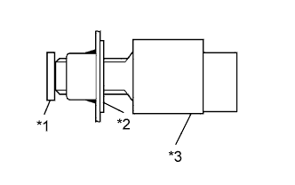
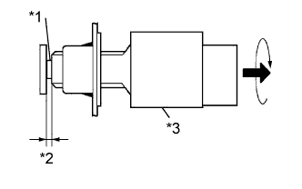

ВЫКЛЮЧАТЕЛЬ СТОП-СИГНАЛОВ > УСТАНОВКА |
| 1. УСТАНОВИТЕ МОНТАЖНЫЙ ПЕРЕХОДНИК ВЫКЛЮЧАТЕЛЯ СТОП-СИГНАЛОВ |
Установите монтажный переходник выключателя стоп-сигналов на кронштейн педали.
| 2. УСТАНОВИТЕ ВЫКЛЮЧАТЕЛЬ СТОП-СИГНАЛОВ В СБОРЕ |
|  |
Установите выключатель стоп-сигналов в регулятор таким образом, чтобы корпус выключателя слегка касался педали тормоза.
| *1 | Педаль тормоза |
| *2 | Переходник |
| *3 | Выключатель стоп-сигналов |
|  |
Поверните выключатель стоп-сигналов против часовой стрелки так, чтобы зазор составлял 1,5-2,5 мм (0,0590-0,0984 дюйма), как показано на рисунке.
| *1 | Вал |
| *2 | 1,5 - 2,5 мм (0,0590 - 0,0984 дюйма) |
| *3 | Выключатель стоп-сигналов |
Проверьте зазор выключателя стоп-сигнала
Присоедините разъем к выключателю стоп-сигналов.
| 3. УСТАНОВИТЕ НИЖНЮЮ КРЫШКУ ПАНЕЛИ ПРИБОРОВ № 1 В СБОРЕ |
Для моделей с левосторонним рулевым управлением:
Введите в зацепление 2 фиксатора и 2 направляющих, чтобы установить нижнюю крышку панели приборов № 1.
Заверните винт.
Для моделей с правосторонним рулевым управлением:
Введите в зацепление 3 фиксатора и 2 направляющих, чтобы установить нижнюю крышку панели приборов № 1.
Заверните винт.